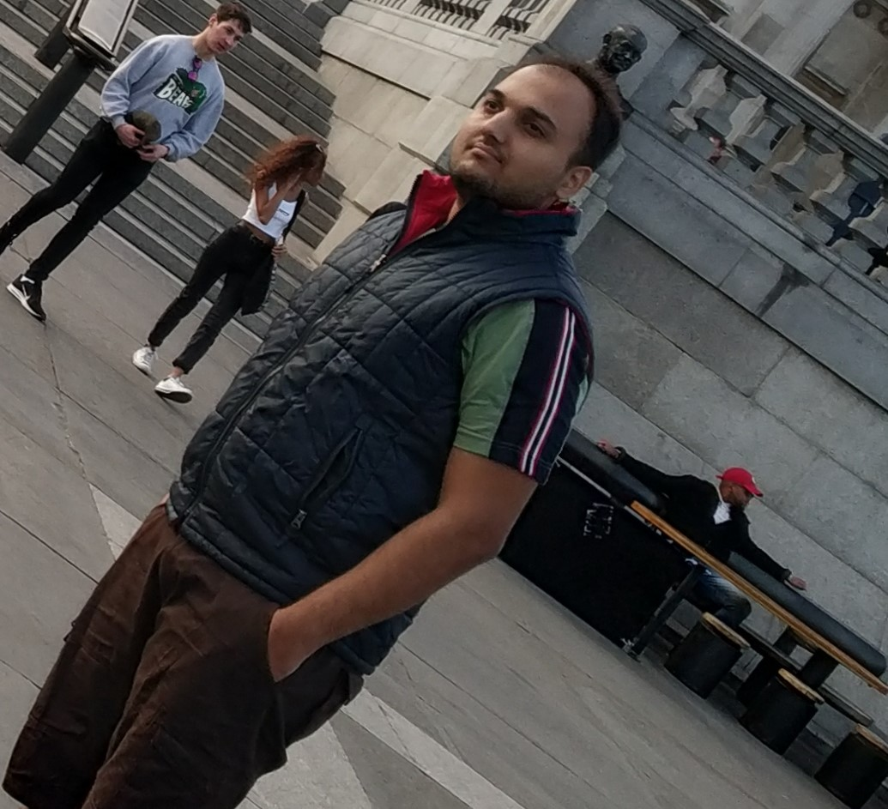

About Me
I done my degree in Bachelor of Multimedia (BMM) at Apeejay College of Fine Arts, jalandhar, Punjab, India on March 20th after that I was a interior designer for 2 years.
My Hobbies
- Listening to music
- Watching football matches of my favorite team
Challenges make you discover things about yourself that you never really knew. - Cicely Tyson
Right now i am a international student at algonquin college. My program is Interactive Media Design (IMD)